Can we teach 100,000 people statistics at a time?
MOOCs and the future
Jeff Leek
Department of Biostatistics, Johns Hopkins Bloomberg School of Public Health
Alternative title
What I really do for a living
- Develop technologies
- Population level inference
- Identifying replicabile features
- Basic machine learning
- Distributing results (software)
MOOCs
Primary characteristics are open access, low cost, scalable, online
(every letter is negotiable, from Wikipedia citing Mathieu Plorde)
How I got into teaching the masses
- Previously : Youtube lectures and “flipping” the classroom.
- 7-1-2012: Brian tells me Hopkins has a deal with Coursera
- 7-1-2012: Roger walks by my office and I tell him he’s in
- 7-2-2012: Roger and I sign up
- 7-5-2012: Roger and I make our advertising videos
- 7-17-2012: Official announcement by JHU
- 9/2012: – Roger’s/Brian’s courses run
- 1/2013: – Jeff’s course runs
JHU's announcement
The next day
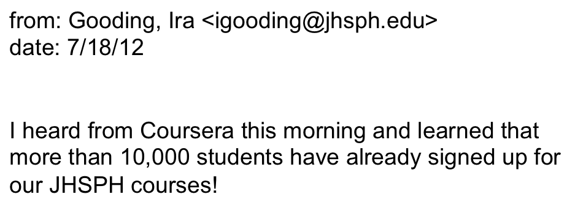
The day after that
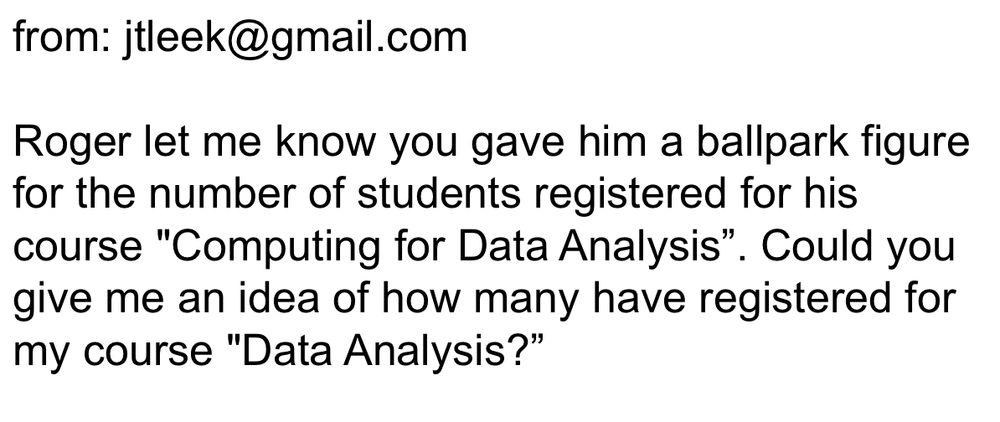
Uh-oh
Roger is so supportive
Only the beginning
Some summary statistics
- Classes considered are MBBC1, MBBC2, CDA, Case, DA
- A total of 497,423 students enrolled
13 class offerings
Average of 38,263 students per class.
Minimum class size of 5,279 for class MBBC2 offering 2
Maximum class size of 93,136 for class DA offering 1.
Coursera platform, videos
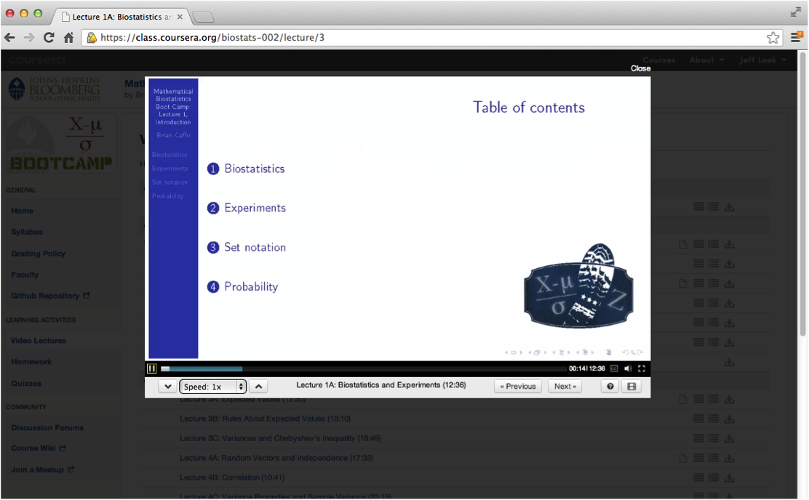
Coursera platform, quizzes
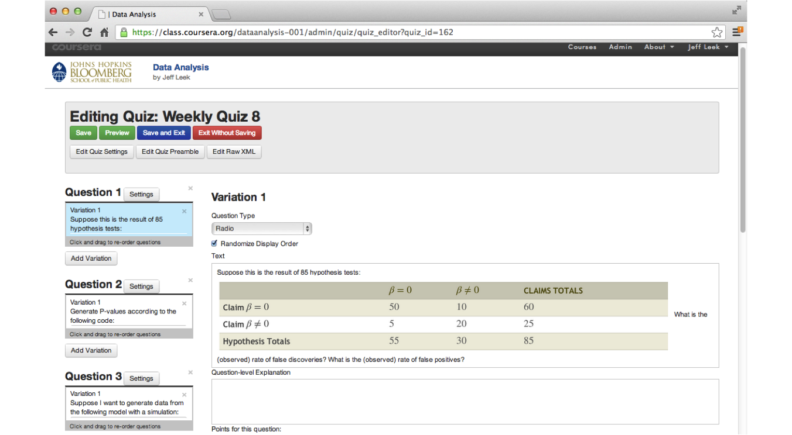
Coursera platform, peer grading
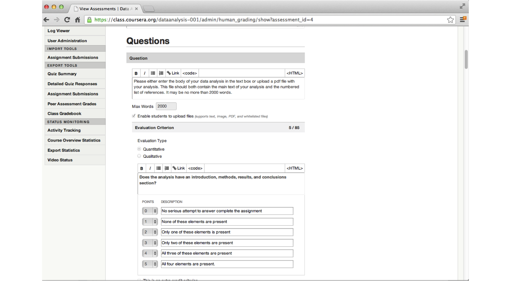
Rubric (examples)
Formatting
- Does the analysis have an introduction, analysis, and conclusions?
- Does the analysis include references for the statistical methods used?
The Question
- Is the type of question specified (exploratory, inferential, predictive, causal)?
- Does the analysis answer the scientific question?
The Data
- Does the analysis include a complete description of how the data was collected?
- Is there a complete description of how the data was accessed/processed?
Rubric (continued)
Exploratory Analysis
- Does the analysis report any missing data or other unusual features?
- Does the analysis include description and justification for data transformations?
Statistical Models
- Are appropriate statistical models applied?
- Are estimates reported with appropriate units and measures of uncertainty?
Conclusions/Reproducibility
- Does the analysis make concrete conclusions?
- Does the analysis specify potential problems with the conclusions?
Some thoughts on peer grading
- Students hate this
- Informal data analysis suggests they are pretty good
- At finding the best analyses
- At finding the worst analyses
- Things I learned about rubric
- Must be incredibly concrete (yes/no)
- If you use a scale explain the scale (0 = no effort, 1 = created file, 2 = etc.)
- Stick to your guns during
- I think this is the only way to scale grading for the important parts
- Statistics is still mostly an art
- Composition matters a lot
Coursera platform, forums
Main source for student interaction
(Forums can be brutal)
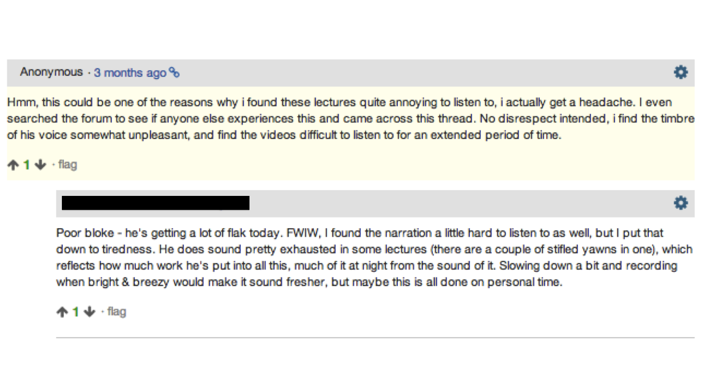
Forums example
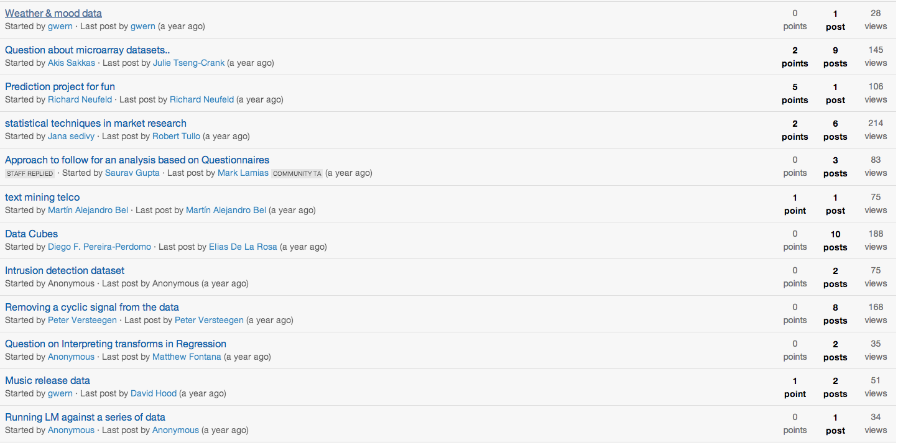
Interesting fallout from doing this
- Jeff's class was listed as one of the top 10 most enrolled Coursera classes
- Roger's class has since eclipsed it in cumulative enrollment (damnit)
- Brian's class featured on the front page of the Washington Post
- Roger interviewed on Anderson Cooper and NPR
- Scott Zeger introduced class Cased Based Introduction to Statistics
- Brian introducted MBBC2
- Martin Lindquist introduced Statistical Analysis of fMRI Data
- John McGready introduced Statistical Reasoning for Public Health
Case studies
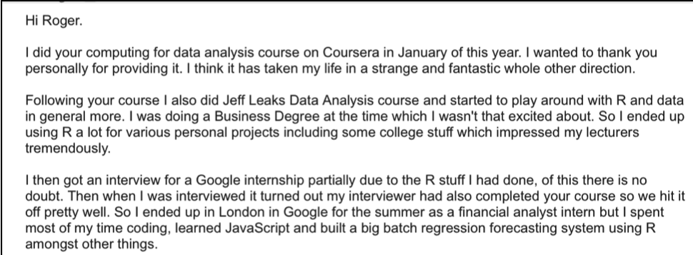
Case studies
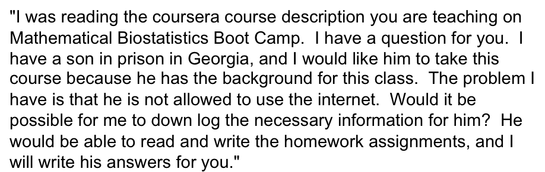
Distribution of Coursera courses* by university
The "genius moves" continue
- 2013: Roger/Brian/I run our courses again
- September 2013: Some genius decides we should do a whole program
- November 19, 2013: Daphne Koller visits JHU and we tell her we have a program
- December-Now: We create a program
- April 7th: First 3 courses launch
- May 7th: Next 3
- June 7th: Next 3
Core team
Plus generous contributions from the
- Department of Biostatistics
- Center for Teaching and Learning
- Bloomberg School of Public Health
- Johns Hopkins University
- Coursera
- Team SWIRL
- Lauren and Ethan (Brian's 2013 interns)
- Contributions from github pull requests
- Tolerant families!
- A half of a million intrepid self learners
Johhs Hopkins Data Science Specialization
Codirected and taught by Roger Peng, Jeff Leek and Brian Caffo
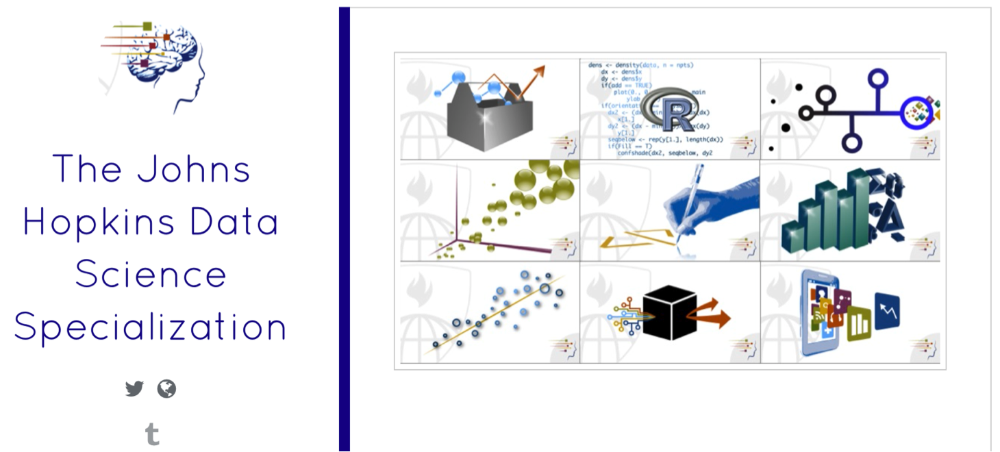
Courses
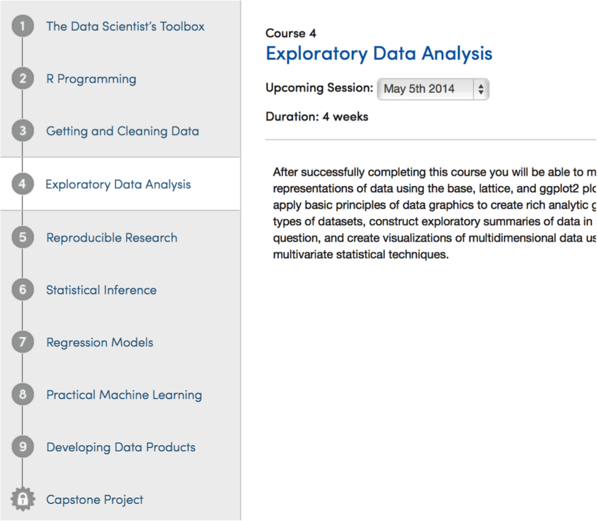
Specialization certificate

Unique aspects of the program
- Completely redesigned stat curriculum
- 9 signature track courses
- 1 capstone project course
- Total cost for certificate (modular) $490
- $49 per sig track for 10 classes
- All courses available for free except capstone
- Each class is four weeks
- Quizzes, in video quizzes and peer assessment projects
- Run monthly after initial rollout
- All content open source
Platform choices
- Everything done on Coursera
- All programming in R
- All lecture notes done in Slidify (common theme)
- All content open source
- Version control through git and github
- (Students will learn and use git)
- RStudio as an IDE
- knitr for reproducible documents and report writing
Standard and non-standard stat content
- Basic probability and math stat
- Statistical inference
- Hypothesis tests, confidence intervals, likelihood
- Brief intro to Bayesian analysis
- Regression and generalized linear models
- Statistical machine learning
- EDA
- Data analysis
- Reproducible research, report generation
- Presentations
- Interactive graphics (rgl, rCharts, shiny, manipulate)
- Data munging, obtaining data
- Programming
- Plotting (ggplot2, rCharts, R base graphics)
- Capstone project
Statistics With Interactive R Learning
http://swirlstats.com
In the R console
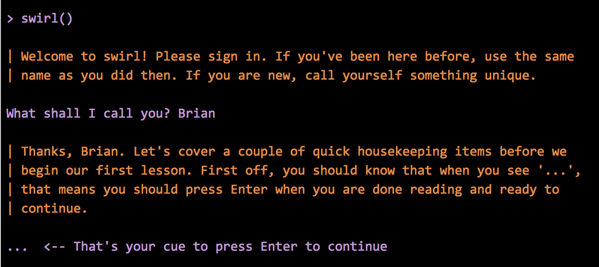
Class selection
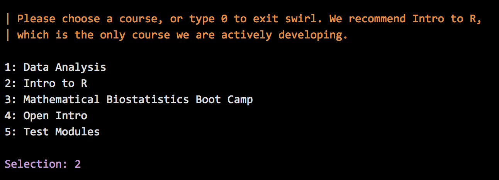
Getting started
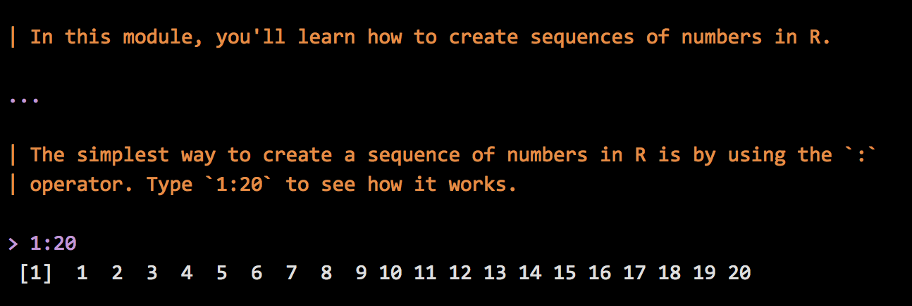
Feedback
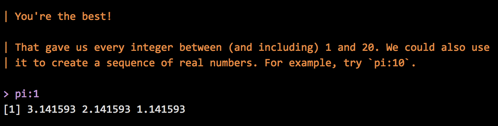
Will this change things?
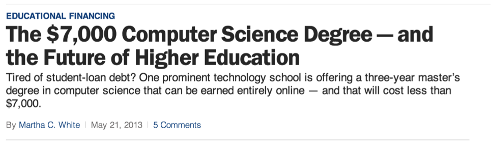
They should take a stats class!
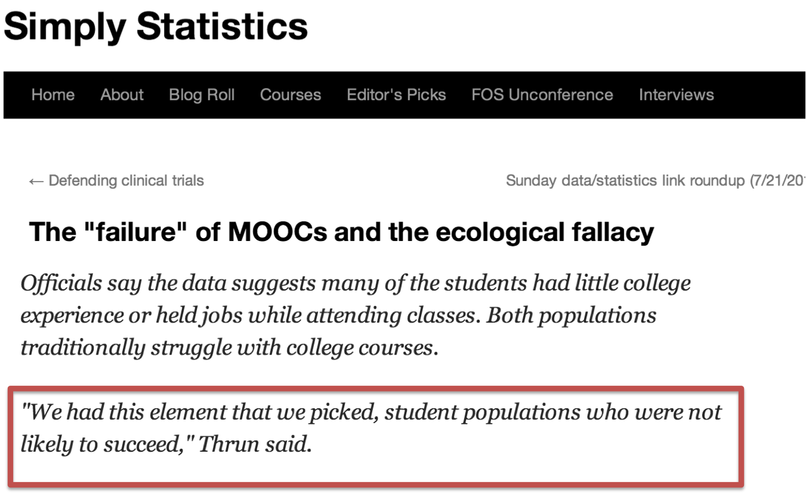
http://simplystatistics.org/2013/07/19/the-failure-of-moocs-and-the-ecological-fallacy/
The reality
Thanks!
About these slides
- HTML5 using (customized) Google io2012 style
- Created using slidify
- Appear on github at (https://github.com/jtleek/MOOCtalk) fork if you'd like
- Jointly written with my collaborators Brian Caffo and Roger Peng
- CC licensed by-nc-sa